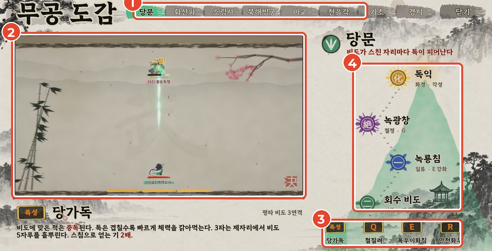

1 · 메인 프로젝트 · 1인 개발
정무대전 正武大战
여섯 문파(캐릭터 유형) 중 하나를 골라 최대 6명이 겨루는 온라인 무협 대전 액션
구현 범위
- 전투여섯 문파 기술, 막기 · 튕겨내기, 상태 이상
- 멀티방 만들기부터 결과창 · 랭크 대전까지
- 연출경지 등극, 결정타, 시작 카운트다운, 무공 도감 영상
- 도구자동 대전, 지연 시뮬, 판정 일치율 측정
외부 리소스
Unity Relay · Multiplayer Services(세션 · 로비), 글꼴, 효과음 · 배경음(생성 도구 사용). 그림 · UI · 이펙트는 에셋 없이 코드로 제작
AI 활용
1.1플레이 영상
1.2네트워크 구조
- 방장은 방을 만든 PC, 게스트는 접속한 PC
- 판정은 맞는 쪽 PC에서 처리. 막기 · 튕겨내기처럼 맞는 사람이 누른 입력을 살리기 위함
- 맞는 쪽이 보낸 피해량은 방장이 상한 초과 여부를 확인한 뒤 체력에 반영
- 부정행위 방지까지 고려한 구조는 아님
1.3핵심 시스템
여섯 문파
문파마다 무공이 다르고, 독 · 빙결 · 기절 같은 상태 이상이 서로 맞물리는 구조. 무공 도감의 기술 영상 68개는 장면을 코드로 연출해 녹화함

판 안 경지 성장
경지는 한 판 안에서 오르는 등급. 때리고, 막고, 튕겨내면 깨달음이 쌓이고, 경지를 돌파하면 문파별 기술이 하나씩 열림

결정타 연출
판을 끝내는 마지막 일격에 화면이 잠깐 조용해졌다가 문파 색 붓 한 획이 그어지는 연출. 여섯 문파마다 다르게 제작
기타 구현대기실 · 결과창 · 랭크 대전 / 입문 수련 8단계와 가이드 / 무작위 지형 5종 / 자동 대전으로 문파별 승률 측정
1.4트러블슈팅
네트워크 판정
화면에서는 맞았는데 피해가 없는 비도 피해 없이 지나가는 비도: 10번 중 4번 → 25번 중 1번
- 문제
- 게스트 화면에서 맞은 비도(던지는 암기)가 피해 없이 지나가는 현상
- 원인
- 판정은 맞는 쪽 PC가 하는데 지연 보상이 없었음. 공격자 화면 속 내 위치와 실제 위치가 달랐음
- 해결
- 공격자 화면에 내가 보이던 시점으로 위치를 되감아 판정(지연 보상, Lag Compensation). 막기 · 무적 여부는 지금 기준 그대로
- 결과
- 모든 조합에 같은 되감기 시간을 썼을 때는 게스트끼리 맞힌 비도 10번 중 4번이 피해 없이 지나감(일치율 59%). 방장 · 게스트 조합별로 따로 재서 맞춘 뒤 25번 중 1번(96%)
일치율: 내 화면에서 닿은 공격 중 실제로 맞은 비율. 측정 조건: 같은 PC에서 개발 빌드 두 개, 편도 지연 60±10ms, 봇끼리 자동 대전. 실제 인터넷 환경 전체를 대표하는 값은 아님
상세 과정 대안 검토 · 한계 · 코드
- 판정을 공격자 쪽으로 옮기면 막기 · 튕겨내기처럼 맞는 쪽이 누른 입력이 무시됨
- 그래서 판정은 맞는 쪽에 두고, 12ms마다 기록해 둔 내 위치를 공격자 화면에 보이던 시점으로 되돌려 판정
- 되감기 적용 전 에디터에서 잰 일치율은 15%. 에디터 측정값이라 위 빌드 수치와는 조건이 다름
- 게스트 화면에서 방장이 늦게 보이는 시간도 단축. NGO 기본 보간은 핑이 튀면 버퍼를 키워 방장을 360ms~1초 늦게 그렸음. 게스트 쪽 보간을 고정 3틱으로 바꿔 170ms로 줄임
Duelist.cs · ViewDelayOf / HitPositionfloat ViewDelayOf(Duelist attacker) { if (attacker == null || attacker.IsOwner || !nm.IsListening) return 0f; bool attackerIsHost = attacker.OwnerClientId == NetworkManager.ServerClientId; float attackerOneWay = attackerIsHost ? 0f : nm.IsServer ? transport.GetCurrentRtt(attacker.OwnerClientId) / 2000f : OneWay; // 방장 몸: 게스트 PC 보간 버퍼(50ms + 3틱)만큼 더 늦게 그려짐 // 게스트 몸: 이미 늦은 시각이 찍혀 와서 도착하는 대로 그려짐 float delay = IsServer ? attackerOneWay + 0.05f + 3f / 60f : OneWay + attackerOneWay + (attackerIsHost ? 0.02f : 0.01f); return Mathf.Min(MaxRewind, delay); // 상한 0.25초 } public Vector3 HitPosition(Duelist attacker) => PositionAgo(ViewDelayOf(attacker));
코드의 0.05, 0.02, 0.01은 방장 · 게스트 조합별로 개발 빌드에서 재서 맞춘 값
대안 검토
- 공격자 화면 기준 판정 → 막는 사람의 반응이 무시됨
- 보간 버퍼만 축소 → 핑이 튀면 끊김
- 맞는 쪽 판정 + 되감기
한계
되감기는 최대 0.25초. 실제 공유기 환경이나 사람끼리 하는 대전은 아직 측정하지 못함
측정 환경
잴 때마다 달라지는 판정 일치율 38~60%로 흔들림 → 안정된 측정
- 문제
- 에디터에서 잰 비도 일치율이 38~60%로 잴 때마다 달라, 고친 것이 효과가 있는지 판단할 수 없는 상황
- 원인
- 창 두 개를 띄우면 포커스 없는 에디터가 49초에 3프레임만 돌았고, 이 멈춤이 측정에 섞임
- 해결
- 측정을 개발 빌드 두 개로 옮기고, 실행 인자 하나로 방장 · 게스트 · 자동 대전 · 지연 시뮬 · 일치율 기록을 켜게 제작
- 결과
- 수치가 안정되면서 가려져 있던 버그 발견. 던지는 사람 화면만 비도 출발점이 최대 0.8m 달랐고, 고친 뒤 비도 102번 중 93번(91%) 일치
- 이후
- AI 코딩 도구로 추가한 새 기술 '폭우연사'가 일치율을 91%에서 76%로 떨어뜨린 것도 같은 측정으로 발견해 89%까지 복구. 새 기술을 넣으면 빌드 두 개로 다시 측정하는 규칙 추가
상세 과정 멈춤 원인 · 측정으로 찾은 버그 · 대안 검토 · 한계 · 코드
- 프로파일러로 확인하니 포커스 없는 에디터에서 화면 출력 대기가 1초마다 500ms씩 걸리고 있었음
- 에디터에서만 생기는 멈춤이라, 고치는 대신 측정 환경을 개발 빌드로 변경
측정으로 찾은 버그: 비도 출발점
- 던지는 사람 화면에서만 비도가 '지금 자리'에서 출발해 다른 화면과 궤적이 최대 0.8m 어긋남
- 던지는 순간의 자리와 걸음 속도를 RPC 하나로 보내고, 던진 사람을 포함한 모든 화면이 같은 식으로 자리를 계산하게 변경
대안 검토
- 멈춘 구간만 빼고 분석 → 매번 손으로 골라내야 함
- 에디터 루프 강제 구동 → 멈춤이 완전히 사라지지 않음
- 개발 빌드 두 개로 측정
한계
"화면에서 닿음 → 실제로 맞음"만 집계. 반대 경우와 사람의 실제 움직임은 반영되지 않음
엔진 · 플랫폼
다른 PC에서만 작아지는 커서 32px → 64px
- 문제
- 다른 PC에서 커서가 작게 보이고, 설정에서 키워도 그대로인 현상
- 원인
- Unity 6000.3 윈도우 빌드에서 Cursor.SetCursor로 넘긴 64px 그림이 32px로 그려지고 있었음
- 해결
- Win32로 커서를 직접 만들고, 유니티가 되돌리지 못하게 SetCursor 호출을 가로챔
- 결과
- 설정 50 / 100 / 200%에서 32 / 64 / 128px로 표시, 기본 화살표 깜빡임 0번
측정 조건: 윈도우 빌드, 1080p 모니터
상세 과정 잘못 짚은 원인 · 대안 검토 · 한계 · 코드
- 내 PC에서는 문제없어 보여 늦게 발견
- 처음엔 64px 고정이 원인이라 보고 크기별 이미지를 11벌 만들었으나, 잘못 짚은 원인이었음
- Win32의 CreateIconIndirect로 커서를 직접 만들어 창에 걸자, 유니티가 매 프레임 기본 화살표를 다시 걸어 커서가 깜빡임
- WndProc과 UnityPlayer.dll의 SetCursor 호출(가져오기 표, IAT)까지 가로채고, 게임 종료 시 원래대로 되돌리게 함
DuelCursor.cs · PatchUnitySetCursor (요약)var module = GetModuleHandle("UnityPlayer.dll"); int imports = Marshal.ReadInt32(module, pe + 24 + 120); // 가져오기 표 // USER32.dll 항목에서 이름이 "SetCursor"인 칸 찾기 iatSlot = module + slots + i * 8; realSetCursor = Marshal.ReadIntPtr(iatSlot); WriteSlot(Marshal.GetFunctionPointerForDelegate(unitySetCursor)); // 유니티가 SetCursor를 불러도 창 안이면 우리 커서로 static IntPtr UnitySetCursor(IntPtr c) => SetCursor(Inside() ? current : c);
대안 검토
- "64px 고정"이라 보고 크기별 이미지 11벌 → 잘못 짚은 원인
- 소프트웨어 커서 → 녹화에 찍히고 한 프레임 늦음
- Win32로 직접 만들어 창에 적용
한계
윈도우 64비트에서만 동작. 엔진 버전이 바뀌면 재확인 필요
1.5결과 · 회고
- 아카데미 동기 약 20명이 테스트, 2~3일마다 새 빌드 배포
- 배운 점: 값이 이상하면 코드보다 측정 방법부터 의심할 것
- 미확인: 실제 인터넷 환경에서 사람끼리 하는 대전, 서로 다른 PC 간 랭크 대전, 관전 · 재접속
- 진행 중: 싱글 모드 개발